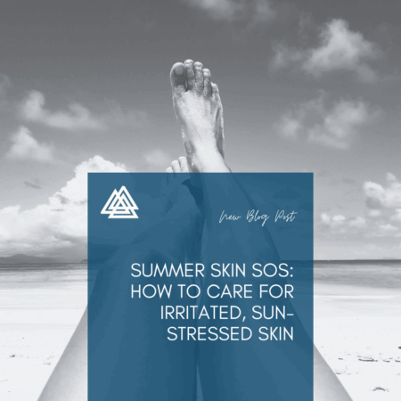

Prism Post
 When it comes to your health, having reliable access to the supplies and equipment you need is essential. But right now, changes being proposed by Medicare could make that harder through something called the Competitive Bidding Program (CBP).
When it comes to your health, having reliable access to the supplies and equipment you need is essential. But right now, changes being proposed by Medicare could make that harder through something called the Competitive Bidding Program (CBP).
So, what is it—and why does it matter to you? Let's break it down.
What is Competitive Bidding?
Normally, Medicare pays suppliers (the companies that provide you with medical equipment and supplies) a set amount for certain items. With competitive bidding, suppliers are asked to “bid” against each other to win contracts. The lowest bids often set the prices.
At first, this might sound like a good idea—lower prices for Medicare. But here's the catch:
Fewer suppliers win contracts.
Patients have fewer choices of who to work with.
Lower payments can mean suppliers can't afford to keep offering the same level of service.
Why Does It Matter to You?
If these new rules go into effect, here's what it could mean for patients, caregivers, and facilities:
Less Choice — Instead of being able to pick the supplier you trust, you may only be able to use the one Medicare contracted.
Access Delays — Fewer suppliers could mean longer wait times to get your supplies or equipment.
Reduced Services — With lower payments, suppliers may not be able to provide the same support.
New Product Categories — Items like insulin pumps and glucose monitors could be affected, making it harder for people managing diabetes to get what they need.
Why Speaking Up Matters
Your voice is powerful. Medicare is asking for public feedback before finalizing these changes, and comments are open until August 27th, 2025.
By sharing your story or concern, you help show how these changes could affect real people—not just numbers on a spreadsheet.
How You Can Take Action
Submitting a comment is quick and easy:
1. Go to the Medicare comment page. Here
2. Click “Submit a Public Comment.”
3. Write your comment (or upload a file).
4. Choose “An Individual” or “Anonymous” under “Tell Us About Yourself.”
5. Check the confirmation box.
6. Click Submit Comment.
Bottom Line:
Competitive bidding may save money on paper, but it comes at a cost to patients and caregivers. It can limit choices, create barriers to access, and reduce the level of care you depend on.
This is your chance to speak up: Your Care, Your Choice.
 As summer winds down and the school year approaches, it's time to prep more than just pencils and notebooks. A strong start to the year begins with good health—we're here to make sure you and your family are covered from head to toe.
As summer winds down and the school year approaches, it's time to prep more than just pencils and notebooks. A strong start to the year begins with good health—we're here to make sure you and your family are covered from head to toe.
Here's our ultimate back-to-school health checklist to help students of all ages stay well, stay focused, and start the year off right:
✅ 1. Immune Support for a Healthier Classroom
Crowded classrooms and shared spaces can be breeding grounds for germs. Boost your child's natural defenses with:
Daily multivitamins
Immune-boosting supplements
Hand sanitizers and wipes for on-the-go protection
✅ 2. Skin Care Essentials for Busy Days
From scrapes on the playground to breakouts from stress or sweat, skin care matters more than you might think.
Gentle cleansers for daily use
Moisturizers for sensitive or dry skin
Antiseptic wipes and bandages for minor injuries
✅ 3. Hydration Helpers for All-Day Energy
Staying hydrated supports focus, energy, and overall well-being—especially during warmer back-to-school days.
Reusable water bottles
Electrolyte-enhanced drinks or supplements
Hydration reminders or trackers for older students
✅ 4. Comfort Products for Confidence
Back-to-school can bring a mix of excitement and nerves. Help students feel their best with:
Compression socks for long school days or sports
Incontinence products for those who need discreet support
Comfort aids for anxiety or stress, like heating pads or calming lotions
✅ 5. Wellness Tools for At-Home Monitoring
Track health easily from home to catch small concerns before they become bigger issues.
Thermometers
Pulse oximeters
Pediatric care supplies
Because a healthy start is the best start.
#backtoschool #healthessentials #healthchecklist #schoolchecklist #prism #healthsupplies

Long days in the sun are one of the best parts of summer—but they can also take a toll on your skin. From sunburn and heat rashes to dryness and irritation, your skin might be sending out an SOS.☀️ Common Summer Skin Stressors
Warm-weather skin issues can sneak up on even the most careful sun-lovers. Here are a few common culprits:
Sunburns from prolonged UV exposure
Heat rashes caused by sweat and humidity
Dryness or flaking from salt water, chlorine, or air conditioning
Irritation from bug bites or allergens
🧴 Top Tips for Soothing Summer Skin
Whether you’re recovering from too much sun or trying to prevent future flare-ups, these skin care steps can help:
1. Cool It Down
Apply cold compresses, hydrating mists, or after-sun gels with ingredients like aloe vera or menthol to instantly calm overheated skin.
2. Hydrate Inside & Out
Drink plenty of water and use gentle moisturizers that lock in hydration without clogging pores. Look for formulas with hyaluronic acid or ceramides.
3. Treat Gently
Avoid harsh scrubs or chemical exfoliants on sun-stressed skin. Instead, use soothing cleansers and fragrance-free lotions to avoid further irritation.
4. Protect What’s Healing
Use lightweight, non-comedogenic SPF every day—even if you’re not heading to the beach. Sun-exposed skin is more vulnerable and needs daily protection to heal properly.
5. Target Irritated Areas
Try barrier creams or skin repair ointments on dry, flaky, or cracked spots. For itchy or inflamed areas, look for products with colloidal oatmeal or hydrocortisone (when appropriate).
Because summer should leave memories—not irritation.
 Support routines. Restock essentials. Set the stage for a healthy start.
Support routines. Restock essentials. Set the stage for a healthy start.
As July winds down, families across the country are beginning to prepare for the school year ahead. While buying school supplies and organizing schedules are top of mind, it's also the perfect time to revisit health routines—especially for students managing chronic conditions or medical needs.
At Prism, we're here to support patients, caregivers, and families with the tools and resources they need to feel confident and prepared for a healthy return to school.
🩺 Health Prep Checklist for Back-to-School Success
1. Schedule Check-Ups Early
Get ahead of the rush by booking school physicals, annual wellness visits, or any specialist appointments now. Be sure to update any immunization records, allergy plans, or prescription renewals.
2. Restock Medical Supplies
Ensure you have an adequate supply of:
Wound care items
Incontinence or urology supplies
Diabetic care products
Skin protection essentials Check expiration dates and consider creating a travel-sized kit for backpacks or the school nurse’s office.
3. Communicate with School Staff
If your child uses medical equipment, takes daily medication, or has emergency health protocols, connect with school administrators, teachers, and nurses to share care plans and support needs.
4. Refresh Daily Routines
Start adjusting bedtimes and morning routines gradually so the transition to school days is less overwhelming—especially for children managing fatigue or ongoing recovery.
5. Prioritize Emotional Wellness
The return to school can bring anxiety for children and caregivers alike. Consider building in relaxation time, talking openly about feelings, and checking in regularly—especially for students with medical conditions that may set them apart from their peers.
🛒 Shop Care Essentials at One By Prism
Prepare with confidence by visiting www.onebyprism.com, where you can find:
✅ Travel-friendly wound care kits
✅ Discreet incontinence and urology products
✅ Compression wear for teens and adults
✅ Skin barrier creams and gentle cleansers
✅ Supplies to support chronic condition management
💬 Need Additional Support?
Our team at www.prism-medical.com is here to help with prescription support, product education, and personalized guidance. Whether you're a parent, caregiver, or school health professional, we're ready to partner with you for a healthy school year.
A successful school year starts with strong support—Prism is here to help you get ready, stay organized, and feel prepared.
 Protecting your skin is key to healing and comfort—especially in warmer weather.
Protecting your skin is key to healing and comfort—especially in warmer weather.
Summer brings sunshine, outdoor fun, and fresh air—but for individuals with sensitive skin, healing wounds, or incontinence-related skin concerns, the heat and humidity can introduce new challenges. Moisture, friction, sun exposure, and sweat can all contribute to irritation, delayed healing, or skin breakdown if not managed properly.
At Prism, we understand how important skin care is—whether you’re recovering from surgery, managing a chronic condition, or caring for someone you love. That's why we're here with tips and trusted products to help you protect and nourish your skin all summer long.
💡 Why Summer Requires Extra Skin Care
During the warmer months, skin is more vulnerable to:
Increased moisture from sweat and humidity
Friction from clothing, compression wear, or mobility devices
Sun exposure, which can irritate healing tissue or cause dryness
Heat rashes, chafing, and fungal infections, especially in skin folds
For patients with wounds, ostomies, catheters, or incontinence, maintaining healthy skin is not just about comfort—it’s essential for preventing infection and promoting healing.
🧴 5 Tips for Summer Skin Protection
1. Keep Skin Clean & Dry
Use gentle cleansers to wash the skin, and pat dry instead of rubbing. Pay extra attention to folds, creases, and moisture-prone areas.
2. Use Skin Barrier Creams Daily
Apply a barrier cream or ointment to protect skin from moisture, friction, and irritation—especially in areas affected by incontinence or wound dressings.
3. Choose Breathable Clothing
Opt for soft, lightweight fabrics that won't trap heat or cause rubbing. Avoid tight waistbands or seams near sensitive areas.
4. Don't Forget the Sunscreen
Use broad-spectrum SPF on exposed areas—but skip open wounds or irritated skin. Talk to your provider about safe options for healing skin.
5. Change Dressings as Directed
Hot weather may require more frequent dressing changes to keep skin cool, clean, and protected. Always follow your provider's guidance.
🛒 Summer Skin Care Essentials at One By Prism
Find the supplies you need to keep your skin safe and supported at www.onebyprism.com:
✅ Barrier creams & ointments
✅ Moisturizers for dry or fragile skin
✅ Antimicrobial wound dressings
✅ Skin-friendly cleansing wipes
✅ Adhesive removers & protectants
💬 Support Is Just a Click Away
Need help finding the right skin care products or navigating your insurance coverage? Visit www.prism-medical.com for educational tools, patient support, and personalized guidance.
Healthy skin starts with everyday care. This summer, let Prism help you protect, heal, and feel more comfortable in your own skin.
 Hydration matters more than you think—especially during the hottest months of the year.
Hydration matters more than you think—especially during the hottest months of the year.
As temperatures rise, so does the risk of dehydration—and for many patients, this can lead to more than just thirst. Whether you’re managing a chronic condition, recovering from surgery, or supporting a loved one in their care journey, staying hydrated is essential for healing, comfort, and overall wellness.
At Prism, we're committed to supporting whole-person health. This summer, we're sharing key hydration tips and tools to help you or someone you care for stay safe and well in the heat.
🚰 Why Hydration Is So Important
Water plays a critical role in nearly every system in the body. It:
Supports wound healing by helping tissues regenerate
Promotes healthy bladder function and helps prevent urinary tract infections
Improves circulation and digestion
Helps manage swelling in conditions like lymphedema
Keeps skin supple, reducing the risk of breakdown or irritation
Affects medication absorption and temperature regulation
Older adults, people with chronic illness, and those using certain medications (like diuretics) are especially vulnerable to dehydration during the summer.
☀️ 6 Hydration Tips for Hot Weather
1. Sip All Day, Don't Wait for Thirst
By the time you feel thirsty, you may already be mildly dehydrated. Keep a bottle with you and drink water regularly throughout the day.
2. Add Hydrating Foods
Fruits and vegetables like watermelon, cucumber, oranges, and strawberries are full of water and make excellent snacks.
3. Be Mindful with Diuretics
Coffee, soda, and alcohol can pull water from your body. Limit these in extreme heat or increase water intake to compensate.
4. Track Intake If Needed
If you or your loved one struggles to stay hydrated, use a journal or hydration app to track daily fluid goals.
5. Use Electrolyte Boosters Safely
For those prone to excessive sweating or using compression garments, electrolyte-enhanced drinks (with low sugar) can support fluid balance—just check with your provider first.
6. Watch for Signs of Dehydration
Symptoms include dizziness, dry mouth, headache, and reduced urination. If any of these occur, increase fluid intake and rest in a cool area.
🛍️ Supportive Products Available at One By Prism
Explore summer care essentials at www.onebyprism.com to support hydration and overall wellness:
✅ Skin barrier creams to protect against dryness and irritation
✅ Moisturizers and wound care supplies for skin integrity
✅ Bladder support products for healthy urinary function
✅ Compression wear designed for breathability in warm weather
💬 Need Additional Help?
At www.prism-medical.com, we offer personalized support and resources to help you navigate your care—whether you're managing wound recovery, bladder care, or long-term wellness goals.
Hydration is more than a summer tip—it's a year-round foundation for better health. Stay cool, stay hydrated, and let Prism help you feel your best.
 July is UV Safety Month, a time to raise awareness about the harmful effects of ultraviolet (UV) radiation and to encourage healthy sun protection habits. While summer brings sunshine and warmth, it also brings increased exposure to UV rays that can lead to long-term skin damage, eye conditions, and heightened health risks—especially for individuals managing chronic wounds, sensitive skin, or post-surgical recovery.
July is UV Safety Month, a time to raise awareness about the harmful effects of ultraviolet (UV) radiation and to encourage healthy sun protection habits. While summer brings sunshine and warmth, it also brings increased exposure to UV rays that can lead to long-term skin damage, eye conditions, and heightened health risks—especially for individuals managing chronic wounds, sensitive skin, or post-surgical recovery.
At Prism, we believe in empowering patients and caregivers with the tools and knowledge they need to protect their health every season. Whether you're healing, managing a condition, or supporting someone who is, sun safety is a critical part of care.
☀️ Why UV Protection Matters
UV rays from the sun (and artificial sources like tanning beds) can damage the skin in as little as 15 minutes. Prolonged or unprotected exposure can lead to:
Sunburn and skin irritation
Delayed wound healing or infection
Skin cancer
Eye damage such as cataracts
Increased sensitivity due to medications or medical treatments
For those using wound dressings, compression garments, or catheters, UV exposure can also affect the integrity of materials and increase the risk of skin breakdown.
🧴 6 Sun Safety Tips for Patients & Caregivers
1. Use Sunscreen Daily
Apply a broad-spectrum sunscreen with SPF 30 or higher to exposed skin, even on cloudy days. Reapply every 2 hours, or more often if sweating or swimming.
2. Cover Sensitive Areas
Healing wounds, incision sites, and areas affected by skin conditions should be kept covered and shielded from direct sun. Choose lightweight, breathable fabrics or approved dressings that protect without trapping heat.
3. Wear Protective Clothing & Sunglasses
Long sleeves, wide-brim hats, and UV-blocking sunglasses add an extra layer of protection. If you wear compression garments, avoid direct sun exposure as the fabric can trap heat.
4. Stay Hydrated
Sun exposure can lead to dehydration, which affects your body's ability to heal. Be sure to drink plenty of water throughout the day.
5. Time Your Outdoor Activities
UV rays are strongest between 10 a.m. and 4 p.m. When possible, plan outdoor activities for early morning or evening hours.
6. Watch for Skin Changes
If you notice new irritation, blistering, or changes in wound appearance after sun exposure, contact your healthcare provider. Early intervention is key.
🛒 Skin Protection & Summer Essentials
At www.onebyprism.com, you'll find a curated selection of skin care and sun safety products to help you stay protected this summer:
✅ Barrier creams for sensitive or irritated skin
✅ Moisturizers to prevent dryness and cracking
✅ Wound dressings that shield and protect
✅ Cleansers, gloves, and skin prep products
✅ Incontinence and urology products designed for summer comfort
Whether you’re managing wound care or just looking to keep your skin healthy in the sun, One By Prism has you covered.
💬 Need Additional Guidance?
Visit www.prism-medical.com for helpful resources, education, and personalized support. Our team is here to assist with product recommendations, prescription support, and care coordination—so you can focus on living fully, with peace of mind.
This summer, let sunshine lift your spirits—not your health risks. Stay protected, stay confident—with help from Prism.
 Summer is a season filled with sunshine, travel plans, and outdoor fun—but for those managing urinary incontinence, it can also bring unique challenges. From higher temperatures to longer days away from home, staying comfortable and confident takes a bit of extra planning.
Summer is a season filled with sunshine, travel plans, and outdoor fun—but for those managing urinary incontinence, it can also bring unique challenges. From higher temperatures to longer days away from home, staying comfortable and confident takes a bit of extra planning.
At Prism, we believe that managing incontinence shouldn't limit your lifestyle. With the right products, education, and support, you can enjoy everything summer has to offer—without worry.
💧 Understanding Incontinence
Urinary incontinence is more common than many people realize, affecting both men and women of all ages. Whether it's stress-related leaks, urgency, or overflow incontinence, it's nothing to be embarrassed about—and it's certainly not something you have to navigate alone.
☀️ Summer Tips for Managing Incontinence
1. Stay Hydrated (the Smart Way)
It may seem counterintuitive, but limiting fluids too much can actually make incontinence worse. Instead, sip water consistently throughout the day and limit bladder irritants like caffeine, alcohol, and carbonated beverages.
2. Choose Breathable, Comfortable Products
Look for moisture-wicking and discreet incontinence wear that provides both protection and comfort during warmer weather. Breathable materials can help reduce skin irritation caused by heat and humidity.
3. Be Prepared On-the-Go
Keep a small travel kit with a few extra incontinence pads, wipes, and a change of clothing when heading out for the day. This simple step can make outings feel more relaxed and worry-free.
4. Protect Your Skin
Frequent exposure to moisture can lead to skin irritation or breakdown. Using barrier creams and gentle cleansers can help maintain healthy skin and prevent discomfort.
5. Talk to Your Healthcare Provider
If your symptoms change or become more frequent, don't hesitate to speak with your provider. There may be additional treatment options or therapies available to support your needs.
🛒 Products That Support You—Every Step of the Way
At One By Prism, you'll find a range of incontinence care products that are discreet, effective, and designed for daily life. We offer:
✅ Protective underwear & absorbent pads
✅ Skin barrier creams & cleansing wipes
✅ Bed pads & discreet disposal bags
✅ Bladder health supplements & support
💬 Additional Support & Resources
Need help navigating incontinence care or looking for guidance on available coverage and services? Visit www.prism-medical.com for patient-friendly resources, educational support, and information about how we help connect patients with the care and products they need.
You deserve to feel confident, comfortable, and in control—this summer and every season.
 June is National Men's Health Month—Support Stronger Steps for Every Stage of Life
June is National Men's Health Month—Support Stronger Steps for Every Stage of Life
Whether you’re on your feet all day for work, managing a chronic condition like diabetes, or just starting to notice a bit more soreness and swelling than usual, foot health is something that deserves more attention than it often gets.
In honor of Men's Health Month, we're highlighting simple, practical ways to protect your foundation—because healthy feet support a healthier life.
At Prism, we're here to help patients and providers stay one step ahead with trusted products, helpful education, and reliable support.
👣 Why Foot Health Matters
Your feet carry you through every step of your day—so when something’s off, the impact can be felt throughout your whole body. Poor foot health can lead to:
Swelling and discomfort
Poor circulation
Increased fall risk
Infection, skin breakdown, and mobility limitations
For individuals with diabetes, lymphedema, or circulatory concerns, proactive foot care is even more critical.
🦶 Top Foot Health Tips from the Experts
1. Prioritize Circulation
If you deal with swelling, tired legs, or prolonged sitting/standing, graduated compression socks can help improve blood flow, reduce fatigue, and support better daily comfort.
2. Inspect Feet Daily
Look for redness, cuts, blisters, or changes in color—especially if you have diabetes or neuropathy. Early detection of issues can prevent serious complications.
3. Keep Feet Clean and Moisturized
Wash and dry feet thoroughly every day, and apply a gentle moisturizing cream to prevent cracking or dryness (but avoid applying lotion between the toes).
4. Wear Proper Footwear
Supportive, breathable shoes that fit well can prevent pressure points and injury. If needed, talk to your provider about orthotic insoles or diabetic-friendly footwear.
5. Don't Ignore Pain
Foot pain isn't something to push through—it's a sign that something may be off. If discomfort persists, consult your healthcare provider.
🛍️ Supportive Products from One By Prism
Looking for products to help you or a loved one stay mobile and comfortable? Shop trusted foot health essentials at www.onebyprism.com, including:
✅ Compression socks (including Sigvaris and PowerStep brands)
✅ Moisturizing foot creams & skin barrier ointments
✅ Diabetic foot care solutions
✅ Braces and insoles for added support
💬 Need More Guidance?
Whether you're managing a chronic condition or simply looking to improve everyday comfort, Prism is here to help. Visit www.prism-medical.com for more patient-focused resources, educational tools, and prescription assistance options.
Take care of your feet—they take care of you.
 In recognition of Men's Health Month & Father's Day — June
In recognition of Men's Health Month & Father's Day — June
June is Men's Health Month—a time to raise awareness and empower men to take charge of their health. It's also a month we celebrate fathers, grandfathers, brothers, and all the men in our lives who work hard and care deeply, often putting others before themselves.
At Prism, we're here to support men's health not just in June, but all year long. Whether you’re shopping for yourself or for someone you love this Father's Day, now is the perfect time to prioritize wellness with practical tips and trusted over-the-counter (OTC) essentials.
🩺 5 Everyday Health Tips for Men
1. Don't Skip Routine Checkups
Preventive care is key. Encourage the men in your life to stay up-to-date on physicals, screenings, and lab work. Early detection is one of the most powerful tools for managing long-term health.
2. Support Joint & Muscle Health
As we age, joint pain and muscle stiffness become more common—especially for active dads and those with labor-intensive jobs. Incorporating compression wear, joint support supplements, and pain relief creams can make a big difference in daily comfort and mobility.
3. Take Heart Health Seriously
Heart disease remains a leading cause of death among men. Small changes—like lowering sodium intake, staying active, and adding heart-healthy supplements—can help support cardiovascular wellness.
4. Address Bladder Health Head-On
Bladder and prostate issues are common but often under-discussed. Whether it's mild incontinence or recovery after a procedure, discreet bladder support products can help men maintain dignity, confidence, and independence.
5. Get Better Sleep
Sleep is foundational to everything—energy, metabolism, mood, and immune health. If stress or discomfort are interfering with rest, look into OTC sleep aids, calming supplements, or nighttime pain relief options that can support deeper, more restorative sleep.
Visit www.prism-medical.com for other helpful resources on men’s health.
🛒 And shop Men's Health Essentials at www.onebyprism.com
Support the men in your life with wellness solutions they can count on—delivered right to their door.
✅ Vitamins & supplements
✅ Compression socks & braces
✅ Bladder control products
✅ Pain relief sprays & patches
✅ Sleep support
✅ Foot & skin care for diabetic support
🎁 Father's Day Reminder
Father's Day is Sunday, June 16th! Consider creating a custom wellness care package for Dad, Grandpa, or any caregiver in your life to show them just how much their health matters, too.
Because when he feels better, he can do more of what he loves.